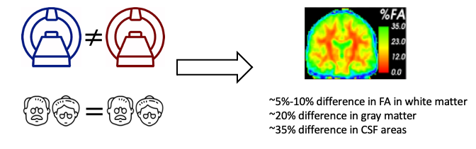
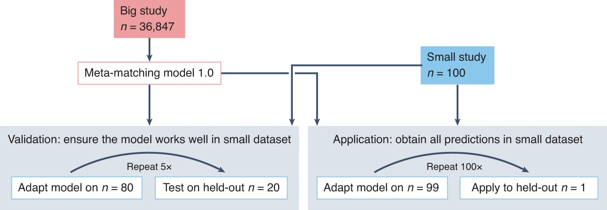
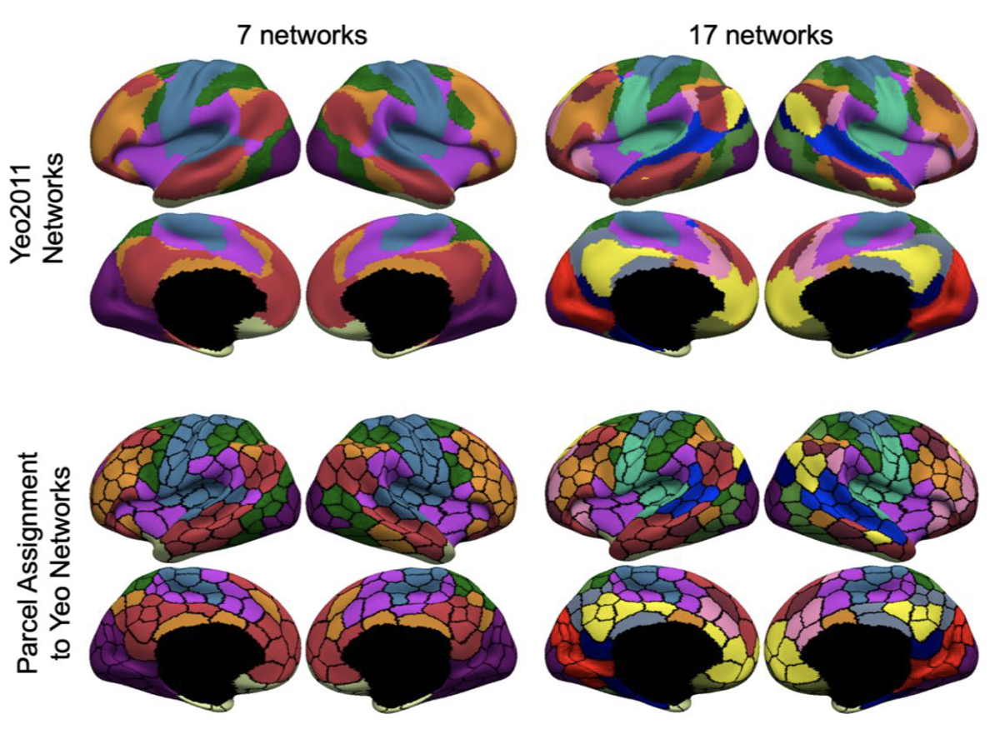

Research
Deep generative modeling for brain MRI harmonization
There is significant interest in pooling magnetic resonance image (MRI) data from multiple datasets to enable mega-analysis. Harmonization is typically performed to reduce heterogeneity when pooling MRI data across datasets. We are focusing on developing state-of-the-art deep learning algorithms (e.g., Variational Auto Encoder) to reduce the unwanted dataset differneces across datasets. Releated studies have been publised in NeuroImage.

Transfer learning for brain imaging based behavior prediction
Individual-level prediction is a fundamental goal in systems neuroscience and is important for precision medicine. Therefore, there is growing interest in leveraging brain imaging data to predict non-brain-imaging phenotypes (e.g., fluid intelligence or clinical outcomes) in individual participants. We are forcusing on devloping machine learning algorithms to help boost the prediction performance on small sample size datasets. Releated studies have been publised in Nature Neuroscience.

Disease progression modeling for Alzheimer's Disease
Early identification of people at risk of developing Alzheimer’s disease (AD) would be beneficial for developing treatments. Utitlizing multiple biomarkders such as brain imaging, cognitive tests,we are developing deep learning models (e.g., Recurrent Neural Network, Transformer) to model the progresion of Alzheimer's Disease. Releated studies have been publised in NeuroImage.

In-vivo delineation of human brain networks and areas
Information processing occurs via the transformation of neural signals across brain networks. Resting-fMRI is a powerful tool allowing the non-invasive, simultaneous, interrogation of multiple brain networks in living individuals. We have utilized resting-fMRI to generate canonical parcellations of the cerebral cortex, cerebellum and striatum into distributed large-scale networks. Releated studies have been publised in NeuroImage.
